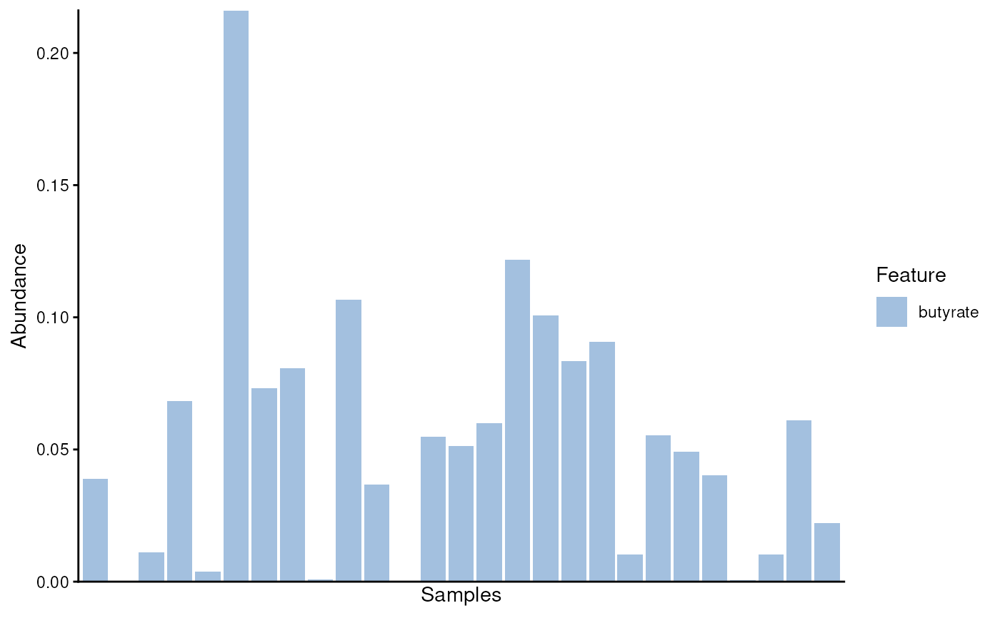

R/AllGenerics.R, R/append.R
addModules.RdgetModules and addModules allow to retrieve or append a linkmap to the side information of a SummarizedExperiment (SE) object. This makes ariadne interoperable with SE-based data analysis.
getModules(x, ...)
addModules(x, ...)
# S4 method for class 'SummarizedExperiment'
addModules(x, modules, by = "rows", key = "row.names", as = "ids")
# S4 method for class 'SummarizedExperiment'
getModules(x, modules, by = "rows", key = "row.names", as = "ids")The rowData or colData of a
SummarizedExperiment
object.
Unused.
data.frame. A linkmap as returned by
weavePath or weaveComplex. Its first and second
columns must contain elements to match to key and the target
modules, respectively.
Character scalar A string indicating whether to append
modules to the "rows" or "cols" side information of
x. (Default: "rows")
Character vector A vector specifying one or more variables
of x side information based on which modules should be
appended. (Default: "row.names")
Character scalar A string specifying whether modules
ids or names should be used. For the latter, a third column with names
must exist in modules. (Default: "ids")
An object of the same type as x with additional columns in its side
information, each containing information on membership to a certain module.
library(mia)
#> Loading required package: MultiAssayExperiment
#> Loading required package: SummarizedExperiment
#> Loading required package: MatrixGenerics
#> Loading required package: matrixStats
#>
#> Attaching package: ‘MatrixGenerics’
#> The following objects are masked from ‘package:matrixStats’:
#>
#> colAlls, colAnyNAs, colAnys, colAvgsPerRowSet, colCollapse,
#> colCounts, colCummaxs, colCummins, colCumprods, colCumsums,
#> colDiffs, colIQRDiffs, colIQRs, colLogSumExps, colMadDiffs,
#> colMads, colMaxs, colMeans2, colMedians, colMins, colOrderStats,
#> colProds, colQuantiles, colRanges, colRanks, colSdDiffs, colSds,
#> colSums2, colTabulates, colVarDiffs, colVars, colWeightedMads,
#> colWeightedMeans, colWeightedMedians, colWeightedSds,
#> colWeightedVars, rowAlls, rowAnyNAs, rowAnys, rowAvgsPerColSet,
#> rowCollapse, rowCounts, rowCummaxs, rowCummins, rowCumprods,
#> rowCumsums, rowDiffs, rowIQRDiffs, rowIQRs, rowLogSumExps,
#> rowMadDiffs, rowMads, rowMaxs, rowMeans2, rowMedians, rowMins,
#> rowOrderStats, rowProds, rowQuantiles, rowRanges, rowRanks,
#> rowSdDiffs, rowSds, rowSums2, rowTabulates, rowVarDiffs, rowVars,
#> rowWeightedMads, rowWeightedMeans, rowWeightedMedians,
#> rowWeightedSds, rowWeightedVars
#> Loading required package: GenomicRanges
#> Loading required package: stats4
#> Loading required package: BiocGenerics
#> Loading required package: generics
#>
#> Attaching package: ‘generics’
#> The following objects are masked from ‘package:base’:
#>
#> as.difftime, as.factor, as.ordered, intersect, is.element, setdiff,
#> setequal, union
#>
#> Attaching package: ‘BiocGenerics’
#> The following objects are masked from ‘package:stats’:
#>
#> IQR, mad, sd, var, xtabs
#> The following objects are masked from ‘package:base’:
#>
#> Filter, Find, Map, Position, Reduce, anyDuplicated, aperm, append,
#> as.data.frame, basename, cbind, colnames, dirname, do.call,
#> duplicated, eval, evalq, get, grep, grepl, is.unsorted, lapply,
#> mapply, match, mget, order, paste, pmax, pmax.int, pmin, pmin.int,
#> rank, rbind, rownames, sapply, saveRDS, table, tapply, unique,
#> unsplit, which.max, which.min
#> Loading required package: S4Vectors
#>
#> Attaching package: ‘S4Vectors’
#> The following object is masked from ‘package:utils’:
#>
#> findMatches
#> The following objects are masked from ‘package:base’:
#>
#> I, expand.grid, unname
#> Loading required package: IRanges
#> Loading required package: Seqinfo
#> Loading required package: Biobase
#> Welcome to Bioconductor
#>
#> Vignettes contain introductory material; view with
#> 'browseVignettes()'. To cite Bioconductor, see
#> 'citation("Biobase")', and for packages 'citation("pkgname")'.
#>
#> Attaching package: ‘Biobase’
#> The following object is masked from ‘package:MatrixGenerics’:
#>
#> rowMedians
#> The following objects are masked from ‘package:matrixStats’:
#>
#> anyMissing, rowMedians
#> Loading required package: SingleCellExperiment
#> Loading required package: TreeSummarizedExperiment
#> Loading required package: Biostrings
#> Loading required package: XVector
#>
#> Attaching package: ‘Biostrings’
#> The following object is masked from ‘package:base’:
#>
#> strsplit
#> This is mia version 1.19.7
#> - Online documentation and vignettes: https://microbiome.github.io/mia/
#> - Online book 'Orchestrating Microbiome Analysis (OMA)': https://microbiome.github.io/OMA/docs/devel/
library(miaViz)
#> Loading required package: ggplot2
#> Loading required package: ggraph
#>
#> Attaching package: ‘miaViz’
#> The following object is masked from ‘package:mia’:
#>
#> plotNMDS
# Import datasets
data("Tengeler2020", package = "mia")
data("butyrate", package = "ariadne")
# Rename experiment object
tse <- Tengeler2020
# Get butyrate-producer module membership
modules <- getModules(tse, butyrate, key = "Genus")
# Get modules based on multiple variables given in order of priority
modules <- getModules(tse, butyrate, key = c("Genus", "Family"))
# Add modules to experiment as names instead of ids
tse <- addModules(tse, butyrate, key = "Genus", as = "names")
# Generate relative abundance table
tse <- transformAssay(tse, method = "relabundance")
# Agglomerate features by membership to butyrate-producer module
mod.se <- agglomerateByModule(tse, by = "rows", group = "butyrate")
# Plot relative abundance of butyrate producers
plotAbundance(mod.se, assay.type = "relabundance")
#> Warning: Removed 2 rows containing missing values or values outside the scale range
#> (`geom_bar()`).
